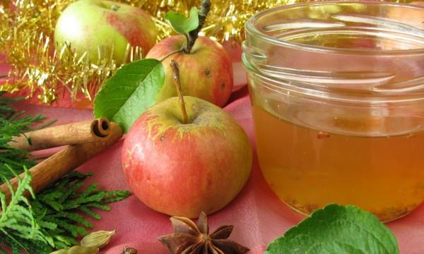

The Berry Lemon Apple Cider Vinegar Drink
This is one of the healthiest drinks as it will help you to lose weight, stabilize your blood
sugar levels and boost your energy and as well as prevent heartburn.
Not to mention one of the best performing ingredients is the apple cider vinegar.
This is proven to help with weight loss as it flushes out toxins and balances out your glucose
levels.

Ingredients
- 1 Tablespoon of apple cider vinegar
- 1 Tablespoon of lemon Juice
- 2 Tablespoons of fresh frozen berries
- Water and some ice
How To Make It
- Place the berries at the bottom of the cup. If you plan to sweeten this drink use honey.
- Mash the berries and honey together with the back of the spoon.
- Add the apple cider vinegar and lemon juice. Then you will fill the cup with ice and add
enough water to fill the rest of the cup.
- Stir for about one minute, drink and enjoy.